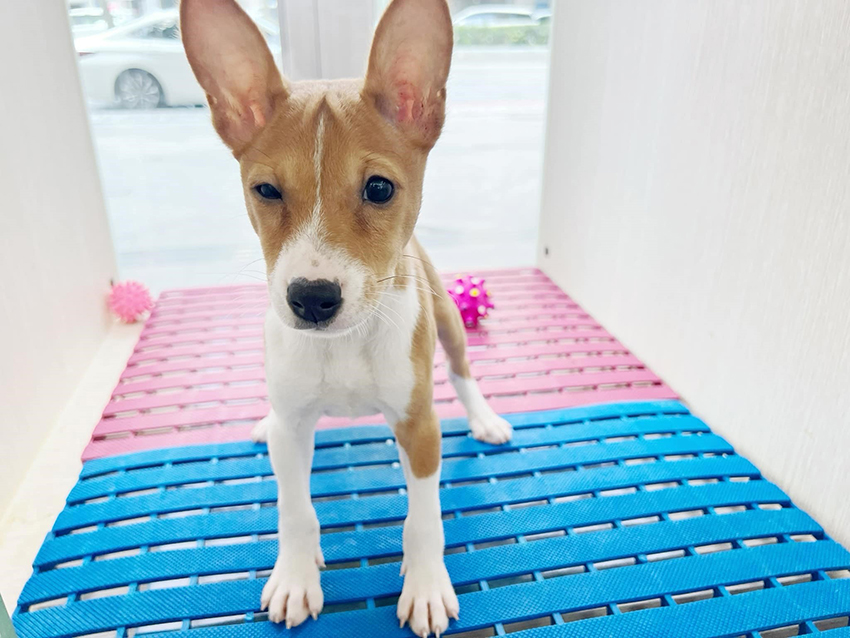
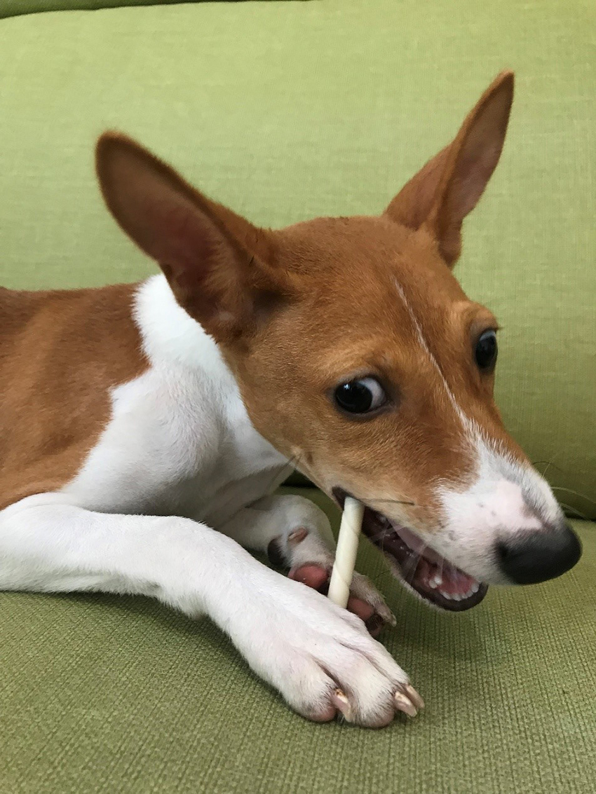
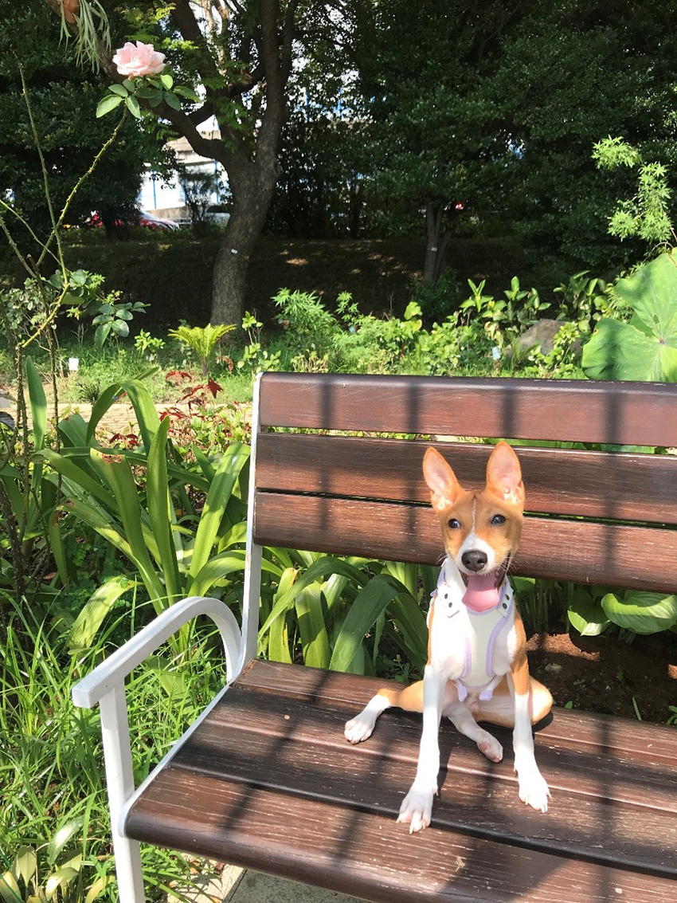

家有頑皮幼犬
連柏柔│企業產品硬體工程一處
一日，在寵物店看到了特殊犬種「貝生吉」，回家後，先生花了時間Google「貝生吉」的資訊。第二次去看牠時，才出生快三個月的牠，已經長出精實肌肉了，真是可愛！店員讓我們抱抱牠跟牠互動，殊不知抱著抱著，不小心就抱回家了……
|  |
我們為「貝生吉」取名為Muscle！由於Muscle是精力十足的非洲獵犬，一定要每天去放電才不會搞破壞，所以我們早上五點多要先起床餵食，然後我帶Muscle去散步，先生則在家整理環境，下班後也要再帶牠去散步一至兩次，導致夫妻倆睡眠時間和個人時間驟減，甚至會為了Muscle意見不合發生口角。
猶記Muscle剛來時，比家裡的紅貴賓成犬矮小很多，當初店員說牠的體型不會再大多少，只是腳會再長一點。如今兩個月過去了，現在的牠已經比紅貴賓高大且重！另外，店員還說「貝生吉」不會汪汪叫，只會發出「嗯嗯嗯」的聲音……Muscle確實不會發出「汪汪」的狗叫聲，但卻會學～狼～叫～啊！我們簡直遇上詐騙集團了！
|  |
家有一＂小＂如有一寶！Muscle最愛吃東西、跑步、追葉子。持續進步的牠，漸漸地不再把先生的腳當玩具追著咬了，而我手上的爪痕咬痕也減少了許多，當我和先生撿到牠換牙掉在地上的乳牙時，兩個人還會開心地撿起來，放在水晶皿裡當寶物收藏哩！
期許Muscle在我們愛的灌溉下，能夠平安開心成長，並能和家裡的老貓老狗和睦相處，不要再追著牠們跑囉！
|  |